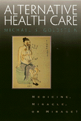

<body bgcolor="#FFFFFF" text="#000000" link="#0000FF" vlink="#CC0000" alink="#CC0000"><center><hr width="350" size="1" align="center" noshade>What is alternative medicine? Why is it so popular? What's its future in American health care?<hr width="350" size="1" align="center" noshade><p><a href="https://cdcshoppingcart.uchicago.edu/Cart/ChicagoBook.aspx?ISBN=9781566396776&&PRESS=temple" target="_top">Buy this book!</a> | <a href="https://cdcshoppingcart.uchicago.edu/Cart/Cart.aspx?PRESS=temple" target="_top">View Cart</a> | <a href="https://cdcshoppingcart.uchicago.edu/Cart/Cart.aspx?PRESS=temple" target="_top">Check Out</a></p><p></p></center><!--none//--><h1>Alternative Health Care</h1>
<H2>Medicine, Miracle, or Mirage?</H2>
<h3>Michael S. Goldstein</h3>
<P>cloth 1-56639-677-8 $80.50, Feb 99, <FONT COLOR=#990033>Available</FONT>
<br>paper 1-56639-678-6 $31.95, Feb 99, <FONT COLOR=#990033>Available</FONT>
<br>Electronic Book 1-43990-567-3 $31.95 <FONT COLOR=#990033>Available</FONT>
<BR> 280 pp
5.5x8.25
</P><BLOCKQUOTE><I>"An important book and an informative, challenging and fun read. Goldstein's Alternative Health Care is the first, and greatly needed, extended overview of alternative health care, its development, and its impact."</I>
<BR>&#151<B>Alexandra Todd</B>, Professor and Chair of Sociology at Suffolk University<I></I></BLOCKQUOTE>
<p>In November of 1998 <i>The Journal of the American Medical Association</i> devoted an entire issue to alternative medicine for the first time in its publishing history. According to survey results reported in the journal, 83 million Americans used some form of alternative medicine to preserve and maintain their health in 1997, a sharp increase from the 61 million who turned to alternative forms of care in 1990.
<p>Michael S. Goldstein's <i>Alternative Health Care</i> is the first comprehensive account of the growing presence of alternative medicine in American society. Beginning with the basic premises of alternative medicine, Goldstein's book examines the clinical, economic, and political realities of the broad range of alternative care options and practices in the United States and explains why alternative medicine has become a viable choice for so many people who are ill or who seek to remain healthy.
<p>Bringing history, policy, practice, personal experience, and in-depth sociological analysis together into one comprehensive volume, Goldstein&#151one of the first recipients of funding from the National Institute of Health for research on alternative medicine&#151also studies the complexities of the relationship between spirituality and alternative medicine and the changing role of alternative medicine in the larger context of American health care. Probing such issues as the corporatization of medicine, the role of alternative medicine in managed care, and the dynamic relationship between conventional and alternative treatments, Goldstein's <i>Alternative Health Care</i> is more than the long-awaited introduction to the many forms of alternative medicine. It is also the measure of the implications of such care for practitioners, businesses, policymakers, and patients alike.
<p><i>Alternative Health Care</i> is the definitive guide for the millions of Americans interested in alternative medicine and treatment, American health care, the sociology of medicine, and American social issues.
<BR>&nbsp;<h2>Excerpt</h2><P>Excerpt available at <a href="http://www.temple.edu/tempress">www.temple.edu/tempress</a></p>
<BR>&nbsp;<h2>Reviews</h2>
<p><I>"...[C]learly supportive of alternative medicine, [Goldstein] provides a logical explanation for its popularity that might enlighten its opponents. He explains alternative health care in the context of the problems with conventional health care. Indeed, looking at how these two worlds fit together or react to each other yields valuable information on how each field can respond better to patients."</I>
<br>&#151<b><I>Los Angeles Times</I></b>
<p><i>"The author looks at the ethos of alternative medicine and examines broader questions of a possible 'paradigm shift' in medicine and whether alternative medicine might be integrated into mainstream medicine, given the current state of health care. Goldstein describes the range of alternative care, explores its popularity, its relation to spirituality, and its place in both the medical market and the current political climate."</i>
<br>&#151<b><i>The Hastings Center Report</i></b>
<BR>&nbsp;<h2>Contents</h2><P>
<P>Acknowledgements
<br>1. The Emergence of Alternative Medicine
<br>2. Victims of Medicine
<br>3. The Core of Alternative Medicine: Age Old Wisdom Made New
<br>4. Medicine and the Spirit
<br>5. Is There <I>Really</I> an Alternative Medicine?
<br>6. The Politics of Alternative Medicine: Personal and Practical
<br>7. Alternative Medicine, Mainstream Markets
<br>8. The Future of Alternative Medicine
<BR>Notes
<BR>Bibliography
<BR>Index
</P><BR>&nbsp;<H2>About the Author(s)</H2>
<table><tr><td valign="top"><img src="/tempress/authors/1330_au.gif" height="90" width="75"></td><td width="100%" valign="middle"><p><B>Michael S. Goldstein</B> is author of <i>The Health Movement: Promoting Fitness in America</i> and editor of <i>50 Simple Things You Can Do to Save Your Life</i>. He serves as Professor of Public Health and Sociology at UCLA.</P></td></tr></table>
<BR><H2>Subject Categories</H2>
<p><A HREF="/tempress/health.html" TARGET="_top">Health and Health Policy</a>
<BR><A HREF="/tempress/general.html" TARGET="_top">General Interest</a>
<BR><A HREF="/tempress/sociology.html" TARGET="_top">Sociology</a>
</p>
<p align="center"><a href="https://cdcshoppingcart.uchicago.edu/Cart/ChicagoBook.aspx?ISBN=9781566396776&&PRESS=temple" target="_top">Buy this book!</a> | <a href="https://cdcshoppingcart.uchicago.edu/Cart/Cart.aspx?PRESS=temple" target="_top">View Cart</a> | <a href="https://cdcshoppingcart.uchicago.edu/Cart/Cart.aspx?PRESS=temple" target="_top">Check Out</a></p><p><font face="Arial" size="1"><a href="copyright.html" onMouseOver="window.status='Web Copyright Policy';return true;" onMouseOut="window.status=''" title="Web Copyright Policy">&copy;</a> 2015 <a href="http://www.temple.edu" target="new" onMouseOver="window.status='Link to Temple University home page';return true;" onMouseOut="window.status=''" title="Link to Temple University home page">Temple University</a>. All Rights Reserved. http://www.temple.edu/tempress/titles/1330_reg.html</font></p>